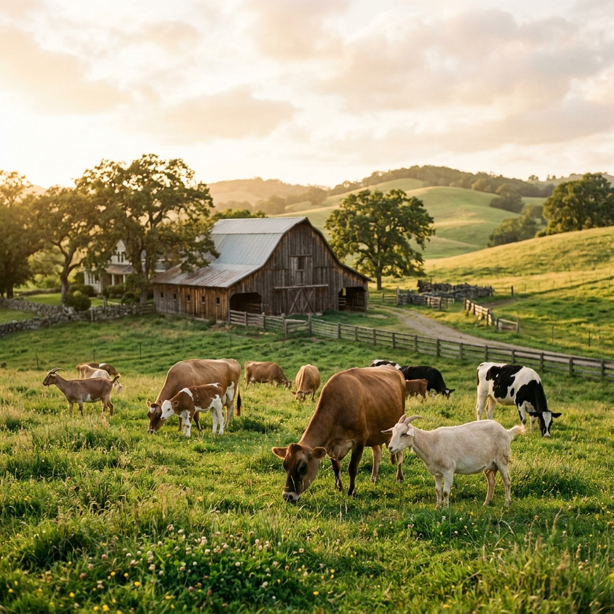
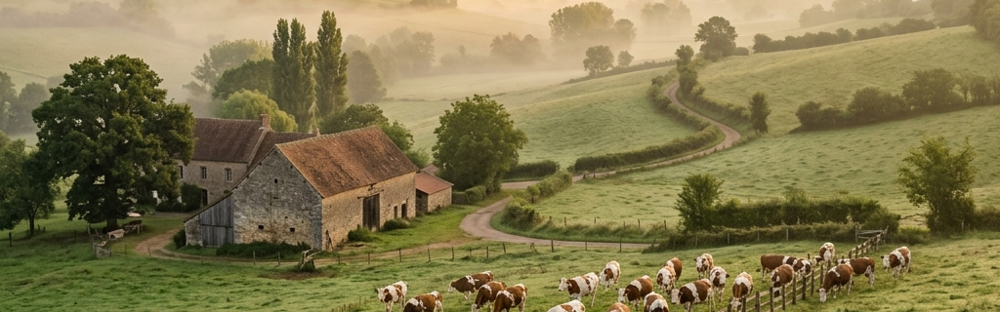
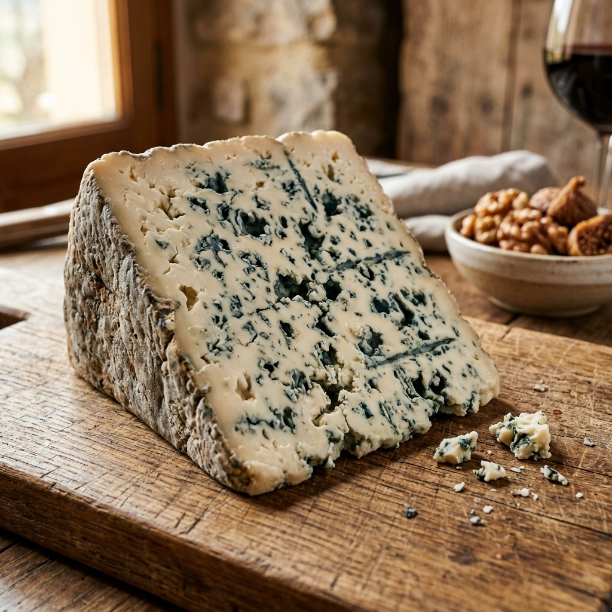

Honest Milk,
Extraordinary Cheese
We will never age industrial milk. The complexity that affinage reveals only exists in the milk to begin with — in the breed of the animal, the altitude of the grazing, the botanicals of the pasture, the season in which it was collected.
All of our partner farms are small — the largest runs under 80 animals. Each farmer knows their herd personally. We visit every farm twice a year, and every wheel that enters our cellar is traceable to a specific farm, field, and collection date.
No Factory Milk
Every farm partner is vetted in person. Zero industrial sourcing.
100% Raw Milk
No pasteurisation — ever. The living enzymes are essential to affinage.
The Heritage
Farm Stories
Each of our eighteen partner farms has a story. Here are four that have shaped our cellar most profoundly.
Massif & Sons — Charolais Cattle · Burgundy, France
Pure-white Charolais herds graze the limestone meadows of Cote d'Or from May through October. Their milk — rich, buttery, and slightly sweet — forms the base of our long-aged mountain wheels. The herd numbers just forty animals, each known by name to the Massif family, who have farmed this beautiful Burgundy land for five consecutive generations.
Dumont Family — Alpine Goats · Savoie, France
At altitude 1,800m, the Dumont family tends Alpine goats whose summer grazing on alpine flora — wild thyme, gentian, clover — imparts a floral, citrus-bright character to our chevre-style wheels. Raw and whole, the milk is collected at dawn and transported to the cellar the same morning. In winter, the goats move down to their lower heritage family farm.
Roussel Farm — Lacaune Sheep · Roquefort, France
The Lacaune breed has been synonymous with Roquefort for centuries. Our partner farm, the Roussel family, maintains traditional rotational grazing across the limestone plateaux — an ancient method that concentrates milk flavour precursors. Their milk — intensely fatty and complex — forms the core heart of our blue-veined and smoked ewe wheels.
Barone Estate — Water Buffalo · Campania, Italy
From the volcanic plains south of Naples comes the milk of true water buffalo — high in fat, protein, and casein, producing a rich, extraordinarily white curd. We use this exceptional milk for our cave-aged buffalo wheels, matured for a minimum of 90 days in our lowest, coolest cave zone — producing a cheese quite unlike anything else in our collection.

Early morning at the Massif farm, Burgundy — milk collection begins at 5am
When We Collect —
The Milk Calendar
Not all milk is equal throughout the year. Spring and summer pasture milk, rich in beta-carotene and volatile aromatics, produces the most complex aged cheese. Our cellar programme follows the seasons.
Spring (Mar–May)
First pasture milk of the year — fresh, vibrant, and aromatic. The most prized for bloomy and semi-hard styles. We prioritise collection from cow and goat farms in this window.
Summer (Jun–Aug)
Peak pasture season for alpine goats at altitude. Wild herb-scented milk with highest complexity. Used for our chevre range and summer alpines. Buffalo milk collection peaks now.
Autumn (Sep–Nov)
Richer, creamier autumn milk from cattle transitioning to hay feeding. Used for our washed-rind autumn specials and ewe milk collection. The cave fills to capacity in October.
Winter (Dec–Feb)
Rich hay milk collected during coldest months. Dense in fat and proteins, perfect for hand-ladled soft vacherin styles and slow-aged mountain wheels resting in our deepest caves.
Our Certifications
& Standards
Every farm partner must meet our sourcing standards — written, inspected, and renewed annually. These are not aspirations. They are non-negotiable conditions of our relationship.
What Our Partners
Must Commit To
No Industrial Feed
Animals must be pasture-grazed for a minimum of 180 days per year. No silage fermented feeds permitted during our collection periods.
Herd Traceability
Every animal that contributes milk to our programme must be individually tagged and traceable to its origin farm and birth record.
Biannual Inspection
We visit every farm twice per year — once announced, once unannounced. Partners who do not meet our standards are removed from the programme.

Taste the Terroir
in Every Wheel
Each tasting box carries full provenance documentation — the farm, the animal, the season, and the affineur's notes on what that specific milk produced.